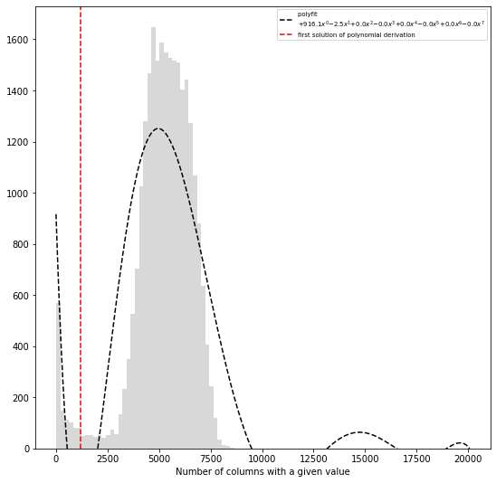

Bin filtering and normalization¶
from pytadbit.parsers.hic_parser import load_hic_data_from_bam
cell = 'mouse_B'
repl = 'rep1'
reso = 100000
hic_data = load_hic_data_from_bam(
'results/fragment/{0}_{1}/03_filtering/valid_reads12_{0}_{1}.bam'.format(cell, repl),
reso, ncpus=8)
(Matrix size 27269x27269) [2020-02-06 11:17:21] - Parsing BAM (122 chunks) [2020-02-06 11:17:21] .......... .......... .......... .......... .......... 50/122 .......... .......... .......... .......... .......... 100/122 .......... .......... .. 122/122 - Getting matrices [2020-02-06 11:17:53] .......... .......... .......... .......... .......... 50/122 .......... .......... .......... .......... .......... 100/122 .......... .......... .. 122/122
Filter bins with low interaction counts¶
In this case, the filtering we are applying is divided in two steps: 1.
First we ask to remove all columns having a total of less than 10
interactions (min_count=10). This is a relatively loose filtering.
2. We apply a more complex filter. We will remove bins with a total
number of counts much lower than the mean of the interaction counts.
Note: For this (very sparse) dataset, we required very few (10) interactions per bin. In normal cases, to filter bins with too low interaction counts one should require that each bin contains a minimum percentage (default 75%) of cells with no-zero counts, or a minimum number of interactions in total (for good quality data the recommended value could be 2500).
hic_data.filter_columns(draw_hist=True, min_count=10, by_mean=True, silent=True)
WARNING: Using twice min_count as the matrix was symmetricized and contains twice as many interactions as the original
print('removed {:,} columns out of {:,} ({:.1f}%)'.format(len(hic_data.bads), len(hic_data),
len(hic_data.bads) / float(len(hic_data)) * 100))
removed 2,660 columns out of 27,269 (9.8%)
At 100 kb it makes no sense to view the full matrix (your matrix will
have more cells than your screen have pixels), so it is much more
informative to plot a specific region of the genome only using the
focus parameter.
from pytadbit.mapping.analyze import hic_map
hic_map(hic_data, normalized=False, focus='chr3', show=True, cmap='viridis')
Normalization algorithms¶
Note: if columns with a lot of zeroes are present the ICE normalization will last very long to converge, and these low-coverage columns will present, at the end of the normalization, few cells with very high values of interaction
Iterative Correction and Eigenvector decomposition (ICE)¶
ICE normalization (Imakaev et al., 2012) assumes an equal experimental visibility of each bin and seeks iteratively for biases that equalize the sum of counts per bin in the matrix. At each iteration, a new matrix is generated by dividing each cell by the product of the sum of counts in its row times the sum of counts in its column. The process converges to a matrix in which all bins have identical sum.
If \(W\) is the raw matrix, \(N\) is its size, and \(i\)(\(j\)) the index of the columns(rows), the normalized matrix \(M\) is iteratively computed as:
This normalization has usually a quite strong effect, and visually the matrices look very smooth and regular.
hic_data.normalize_hic(iterations=100, max_dev=0.00001)
iterative correction
- copying matrix
- computing biases
1083.000 5384.660 101635.000 0 17.87492
4407.395 5483.780 8251.728 1 0.50475
4560.550 5512.003 6238.145 2 0.17261
5116.644 5521.481 6119.412 3 0.10829
5173.833 5524.944 5781.389 4 0.06355
5374.323 5526.241 5761.161 5 0.04251
5380.193 5526.744 5621.079 6 0.02652
5470.168 5526.942 5623.500 7 0.01747
5465.095 5527.021 5561.686 8 0.01120
5506.121 5527.053 5567.812 9 0.00737
5500.600 5527.066 5539.771 10 0.00479
5519.386 5527.071 5544.417 11 0.00314
5515.770 5527.073 5531.733 12 0.00205
5524.250 5527.074 5534.470 13 0.00134
5522.248 5527.075 5528.790 14 0.00087
5526.033 5527.075 5530.231 15 0.00057
5525.014 5527.075 5527.710 16 0.00037
5526.688 5527.075 5528.422 17 0.00024
5526.195 5527.075 5527.312 18 0.00016
5526.929 5527.075 5527.650 19 0.00010
5526.699 5527.075 5527.165 20 0.00007
5527.019 5527.075 5527.321 21 0.00004
5526.915 5527.075 5527.110 22 0.00003
5527.053 5527.075 5527.180 23 0.00002
5527.006 5527.075 5527.089 24 0.00001
5527.066 5527.075 5527.120 25 0.00001
rescaling to factor 1
- getting the sum of the matrix
=> 24609.000
- rescaling biases
from pytadbit.mapping.analyze import hic_map
hic_map(hic_data, normalized=True, focus='chr3', show=True, cmap='viridis')
Save biases¶
hic_data.save_biases('results/fragment/{0}_{1}/03_filtering/valid_reads12_{0}_{1}_ICE_{2}kb.biases'.format(
cell, repl, reso // 1000))
Vanilla coverage normalization¶
The vanilla normalization (Rao et al., 2014) is a variation of the ICE where a single iteration is performed.
hic_data.normalize_hic(iterations=0, max_dev=0.00001)
iterative correction
- copying matrix
- computing biases
rescaling to factor 1
- getting the sum of the matrix
=> 25061.997
- rescaling biases
from pytadbit.mapping.analyze import hic_map
hic_map(hic_data, normalized=True, focus='chr3', show=True, cmap='viridis')
Save biases¶
hic_data.save_biases('results/fragment/{0}_{1}/03_filtering/valid_reads12_{0}_{1}_Vanilla_{2}kb.biases'.format(
cell, repl, reso // 1000))
Square root vanilla coverage (SQRT) normalization¶
The SQRT vanilla normalization (Rao et al., 2014) is a variation of the Vanilla coverage where each element in the matrix is divided by the square root of the product of sums of counts.
hic_data.normalize_hic(iterations=0, sqrt=True, max_dev=0.00001)
iterative correction
- copying matrix
- computing biases
rescaling to factor 1
- getting the sum of the matrix
=> 1790593.806
- rescaling biases
from pytadbit.mapping.analyze import hic_map
hic_map(hic_data, normalized=True, focus='chr3', show=True, cmap='viridis')
Save biases¶
hic_data.save_biases('results/fragment/{0}_{1}/03_filtering/valid_reads12_{0}_{1}_SQRT_{2}kb.biases'.format(
cell, repl, reso // 1000))
OneD normalization¶
OneD normalization (Vidal et al., 2018) is based on fitting a non-linear model between the total amount of contacts per bin and the known biases: - GC content - number of RE sites (the most important bias, the more cut sites, the more mapped reads) - read mappability
As the estimation of each of this statistics is very important for the normalization, they are left outside the normalization function, in order to allow user to modify them.
from pytadbit.parsers.bed_parser import parse_mappability_bedGraph
from pytadbit.utils.normalize_hic import oneD
from pytadbit.mapping.restriction_enzymes import RESTRICTION_ENZYMES
from pytadbit.parsers.genome_parser import parse_fasta, get_gc_content
fasta = 'genome/Mus_musculus-GRCm38.p6/Mus_musculus-GRCm38.p6.fa'
genome = parse_fasta(fasta, verbose=False)
get mappability ~2 min
f_mappability = 'genome/Mus_musculus-GRCm38.p6/Mus_musculus-GRCm38.p6.50mer.bedGraph'
mappability = parse_mappability_bedGraph(f_mappability, reso)
from functools import reduce
for c in genome:
if not c in mappability:
mappability[c] = [float('nan')] * (len(genome) // reso + 1)
if len(mappability[c]) < len(genome) // reso + 1:
mappability[c] += [float('nan')] * (
(len(genome) // reso + 1) - len(mappability[c]))
mappability = reduce(lambda x, y: x + y,
(mappability.get(c, []) for c in genome))
get GC content ~ 30 sec
gc_content = get_gc_content(genome, reso, n_cpus=8)
compute r_sites ~30 sec
re_site = RESTRICTION_ENZYMES['MboI'].replace('|', '')
n_rsites = []
for crm in genome:
for pos in range(0, len(genome[crm]), reso):
seq = genome[crm][pos:pos + reso + 400]
n_rsites.append(seq.count(re_site))
sum_cols = [float('nan') if c in hic_data.bads else
sum(0.0 if l in hic_data.bads else hic_data[c, l] for l in range(len(hic_data)))
for c in range(len(hic_data))]
biases = oneD(tot=sum_cols, map=mappability, res=n_rsites, cg=gc_content)
hic_data.bias = list(biases)
from pytadbit.mapping.analyze import hic_map
hic_map(hic_data, normalized=True, focus='chr19', show=True, cmap='viridis')
Save biases¶
hic_data.save_biases('results/fragment/{0}_{1}/03_filtering/valid_reads12_{0}_{1}_oneD_{2}kb.biases'.format(
cell, repl, reso // 1000))
Comparison¶
By eye, the effect of choosing one normalization over an other is often very small
import matplotlib.pyplot as plt
import numpy as np
from pytadbit.utils.extraviews import plot_HiC_matrix
plt.figure(figsize=(22, 21))
axe = plt.subplot(3, 2, 1)
plt.title('Raw data')
matrix = hic_data.get_matrix(focus='chr3:10000000-40000000', normalized=False)
plot_HiC_matrix(np.log2(matrix), axe=axe,# vmin=0.5,
triangular=True)
axe.axis('off')
for num, norm in enumerate(['SQRT', 'oneD', 'Vanilla', 'ICE'], 3):
# load biases
hic_data.load_biases('results/fragment/{0}_{1}/03_filtering/valid_reads12_{0}_{1}_{3}_{2}kb.biases'.format(
cell, repl, reso // 1000, norm))
# retrieve data as matrix
matrix = hic_data.get_matrix(focus='chr3:10000000-40000000', normalized=True, masked=True)
# define subplot
axe = plt.subplot(3, 2, num)
# draw plot
plt.title(norm)
plot_HiC_matrix(np.log2(matrix), axe=axe,
vmin=-0.5 if norm=='oneD' else 1, # manually adjust color scale depending on the normalization
bad_color='grey', triangular=True)
axe.axis('off')
plt.show()
/home/dcastillo/miniconda2/envs/py3_tadbit/lib/python3.7/site-packages/ipykernel_launcher.py:5: RuntimeWarning: divide by zero encountered in log2 """ /home/dcastillo/miniconda2/envs/py3_tadbit/lib/python3.7/site-packages/ipykernel_launcher.py:18: RuntimeWarning: divide by zero encountered in log2
Other normalizations¶
ICE and Vanilla normalizations are widely used however other, more convoluted, normalizations (Hu et al., 2012) (Yaffe and Tanay, 2011) can be used outside TADbit and then loaded in TADbit as normalized matrices for further analysis.
Best normalization¶
Which is the best normalization to use is a question that can not be answered easily because it depends on the type of data and the type of analysis.
Most of the time Hi-C experiments are conducted in different conditions and, for each, in several replicates. A good way to find the best normalization method may be to select the one that achieve to minimize the differences between replicates and maximize the differences between conditions (this in the context of the analysis to be performed).
References¶
[^](#ref-1) Imakaev, Maxim V and Fudenberg, Geoffrey and McCord, Rachel Patton and Naumova, Natalia and Goloborodko, Anton and Lajoie, Bryan R and Dekker, Job and Mirny, Leonid A. 2012. Iterative correction of Hi-C data reveals hallmarks of chromosome organization.. URL
[^](#ref-2) Rao, Suhas S P and Huntley, Miriam H and Durand, Neva C and Stamenova, Elena K and Bochkov, Ivan D. and James T. Robinson and Sanborn, Adrian L. and Machol, Ido and Omer, Arina D. and Lander, Eric S. and Lieberman-Aiden, Erez. 2014. A 3D Map of the Human Genome at Kilobase Resolution Reveals Principles of Chromatin Looping. URL
[^](#ref-3) Enrique Vidal, François le Dily, Javier Quilez, Ralph Stadhouders, Yasmina Cuartero, Thomas Graf, Marc A Marti-Renom, Miguel Beato, Guillaume J Filion. 2018. OneD: increasing reproducibility of Hi-C samples with abnormal karyotypes. URL
[^](#ref-4) Hu, Ming and Deng, Ke and Selvaraj, Siddarth and Qin, Zhaohui and Ren, Bing and Liu, Jun S. 2012. HiCNorm: removing biases in Hi-C data via Poisson regression.
[^](#ref-5) Yaffe, Eitan and Tanay, Amos. 2011. Probabilistic modeling of Hi-C contact maps eliminates systematic biases to characterize global chromosomal architecture.. URL